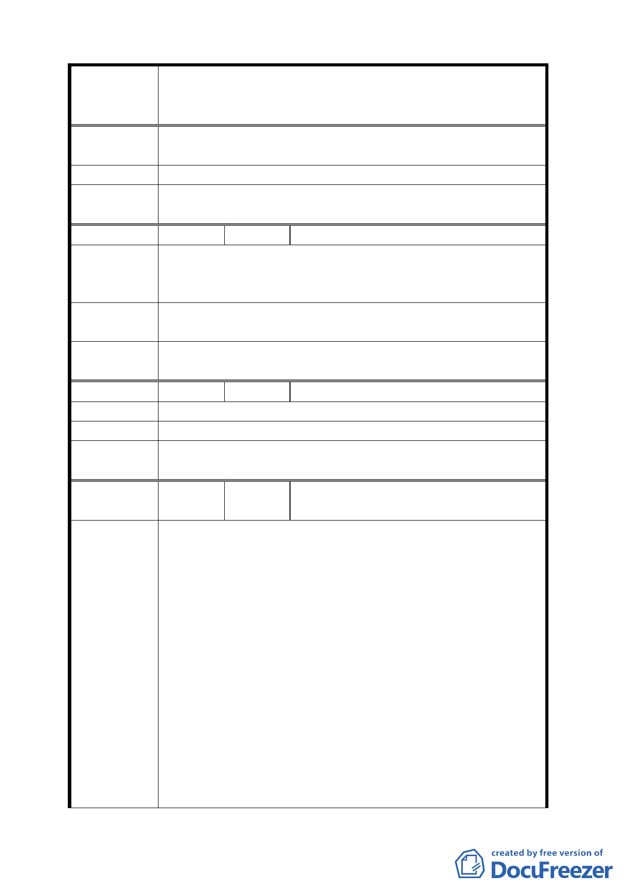

案名
陳情理由
建議辦法
委員會
決議
編號
陳情理由
建議辦法
委員會
決議
編號
陳情理由
建議辦法
委員會
決議
編號
陳情理由
變更臺北市華光社區暨週邊地區住宅區、電信用地、郵
政用地及變電所用地土地為商業區、數位科技專用區及
金融服務專用區主要計畫案
1.都市更新應以原住戶安置為優先考量。
2.本屋經購買取得，並非非法佔有。
重新考量明訂安置戶規劃位置及安置辦法。
同編號 2 決議。
21 陳情人 王禹其
1.共匪移三峽大壩，百萬人都安置，民主臺灣也該以安
置為優先考量。
2.請重擬本案計畫，將安置區塊列入計畫前提。
因本住戶為合法戶，請市府原地安置，以屋換屋，
或直接購地興建，或以建築成本購買。
同編號 2 決議。
22 陳情人 王茂蓮
居住時效達 40 年之事實，請給予安置。
重新擬定原住戶安置位所及安置辦法。
同編號 2 決議。
23
陳情人
臺灣電力股份有限公司台北供電區
營運處
旨揭計畫範圍內之大安區金華段三小段 148-3 地號
經查現有本公司「中正一次配電變電所」，其係民國 71
年即興建使用迄今。現既為促進都市發展並配合行政院
建構臺北金融及數位科技專區之政策，本公司自當鼎力
配合，惟該計畫要求將變電所改以地下化方式配置於區
內乙節，姑不論變電所選址涉及供電負載範圍、電纜管
路引接、基地條件（面積、地質、區位）等各方面之綜
合評估，本區內有否合適之設置地點容有疑義，而地下
式變電所之興建及後續維護成本俱倍數於屋內式變電
所，況現階段民眾於變電所設施之疑慮未除，另行覓地
興建勢將引起民眾抗爭；復以該變電所肩負提供大安、
中正、博愛特區內穩定用電之重任，該等區域向為文
教、商業、行政之精華地帶，其內作息人口密集、各項
建物及設施鱗次櫛比，倘因用地難尋而採原地改建方
式，以該區周邊現有各變電所之供電容量已近滿載，難
- 15 -